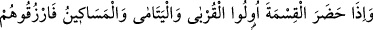
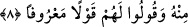

baba, eşler, oğul ve kızlardan ibâret “Ana-babanın ve yakınların bıraktıklarından
erkeklere”, yâni ölünün erkek evlatlarına “bir pay vardır.”
“Ana-babanın ve yakınların bıraktıklarından kadınlara da bir pay vardır. Gerek
azından, gerek çoğundan”, ifâdesi, at ve savaş âletlerinin erkeklere âit olması gibi,
belli malların belli vârislere mahsus olacağı düşüncesini ortadan kaldırmaktadır.
Kadın-erkek herkese büyük küçük her şeyden pay olduğunu kuvvetlice belirtmektedir.
“Belli bir hisse ayrılmıştır.” ifâdesinde, vârisin kendi payından vazgeçmesi durumunda
bile payının bâkî kalacağına delil vardır.
8- (Mîrastan payı olmayan) yakınlar, yetimler ve yoksullar mîras taksîminde
hazır bulunursa bundan, onları da rızıklandırın ve onlara güzel söz söyleyin.
Ölene mîrasçı olmayan “yakınlar,” yabancılardan “yetimler ve yoksullar” tereke ve
“mîras taksîminde hazır bulunursa bundan, onları da rızıklandırın.” Yâni, taksîm
olunan maldan veya terekeden onlara da bir şeyler verin. Bu emir, bülûğa ermiş
vârislere mezkûr grupların gönüllerini hoş tutmaları ve onlara tasaddukta bulunmaları
için yöneltilmiş mecbûriyet ifâde etmeyen (mendûb) bir emirdir. Vârisler toplanıp bu
gruplar da orada hazır bulundukları zaman, mü’minler bunlara paylarından ufak
miktarlarda bağış yaparlardı. Cenâb-ı Hak da bunu, farz olmaksızın teşvîk buyurmuştur.
Mezkûr gruplara bağışta bulunmak farz olsaydı, diğer haklarda olduğu gibi bunun için
de elbette bir sınır ve miktar koyulurdu.
“Ve onlara güzel söz söyleyin.” Güzel söz, vârislerin; “Buyurun alın, Allah
bereketini versin!” diyerek onlara duâ etmeleri, verdiklerini az görüp bundan dolayı
özür dilemeleri ve başlarına kakmamalarıdır. Nefsin şer’an veya aklen güzel olduğu
için huzur bulup hoşlandığı her söz ve davranış güzel (ma’rûf)dir. Şer’an ya da aklen
çirkin olduğu için kötü bulduğu her şey de kötü (münker)dür. Bir hadîs-i şerifte de:
“Her iyilik (ma’rûf) sadakadır.”[206] buyurulmuştur. Ayrıca şöyle bir darb-ı mesel
vardır: “İyilik yap denize at, balık bilmezse Hâlık bilir.”
Yap iyiliği at suya ey padişah,
Bilmez ise eğer balık, bilir Allah.
Anlatılır ki: Bir yılan sâlih bir adama gelip; “Beni düşmanımdan kurtar, Allah da seni
kurtarsın” demiş. Adam elbisesini serince yılan: “Ama düşmanım beni burada görür.
Eğer iyilik yapmak istiyorsan ağzını aç da gireyim.” demiş. Adam:
“Beni helak edebileceğinden korkuyorum” deyince yılan: